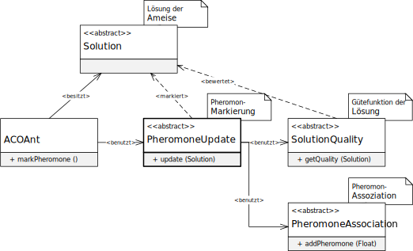

类 PheromoneUpdateOnSubsets
java.lang.Object
eu.andredick.aco.pheromoneupdate.AbstractPheromoneUpdate<PheromoneOnSubsets,SCPSolution>
eu.andredick.aco.pheromoneupdate.PheromoneUpdateOnSubsets
public class PheromoneUpdateOnSubsets
extends AbstractPheromoneUpdate<PheromoneOnSubsets,SCPSolution>
信息素标记组件的实现
SCP 问题中通过相关的解
问题 (
由主进程 (
为了执行此任务，蚂蚁具有信息素标记的功能。
对于要选择的蚂蚁解的实例
随后，通过成分信息素关联 (
SCP 问题中通过相关的解
SCPSolution对子集的信息素PheromoneOnSubsets进行标记。问题 (
AbstractProblem)的解决方案 (AbstractSolution) 的信息素标记对蚂蚁 (AbstractAnt)具有指导作用。由主进程 (
AbstractMasterProcess)调用。为了执行此任务，蚂蚁具有信息素标记的功能。
对于要选择的蚂蚁解的实例
AbstractSolution 首先使用质量函数 (AbstractSolutionQuality) 确定要应用的信息素的量，随后，通过成分信息素关联 (
AbstractPheromoneAssociation) 增加解成分上的信息素浓度。
-
字段概要
从类继承的字段 eu.andredick.aco.pheromoneupdate.AbstractPheromoneUpdate
pheromoneStructure, solutionQuality -
构造器概要
构造器构造器说明PheromoneUpdateOnSubsets(PheromoneOnSubsets pheromoneStructure, AbstractSolutionQuality solutionQuality) 构造函数 -
方法概要
-
构造器详细资料
-
PheromoneUpdateOnSubsets
public PheromoneUpdateOnSubsets(PheromoneOnSubsets pheromoneStructure, AbstractSolutionQuality solutionQuality) 构造函数- 参数:
pheromoneStructure- 信息素与SCP子群的关联solutionQuality- 解决方案的质量组件
-
-
方法详细资料
-
update
根据给定的 SCP 解决方案，用信息素标记包含的子集。
为此，首先使用AbstractPheromoneUpdate.solutionQuality确定解决方案的质量，
然后根据解决方案的质量，将包含在 SCP 解决方案中的所有子集都用信息素标记。
为此使用传入的信息素关联组件 (AbstractPheromoneUpdate.pheromoneStructure)。- 指定者:
update在类中AbstractPheromoneUpdate<PheromoneOnSubsets,SCPSolution> - 参数:
solution- 用信息素标记的SCP解或蚂蚁路径.
-